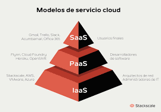

La computación en la nube es la disponibilidad a pedido de los recursos de procesamiento como los servicios por Internet. Elimina la necesidad de que las empresas obtengan, configuren o administren recursos por su cuenta; de esta forma, solo paguen por lo que usan.
Conceptos Generales
Tipos de Servicios en la Nube

Los tres tipos principales de computación en la nube son la nube pública, la privada y la híbrida. Dentro de estos modelos de implementación, hay cuatro servicios principales: infraestructura como servicio (IaaS), plataforma como servicio (PaaS), software como servicio (SaaS) y computación sin servidores.
Plataforma como servicio (PaaS):
Ofrece acceso bajo demanda a los servicios de infraestructura de TI, incluidos el procesamiento, el almacenamiento, las herramientas de redes y la virtualización. Proporciona el nivel más alto de control sobre tus recursos de TI y se asemeja más a los recursos de TI locales tradicionales.Plataforma como servicio (PaaS):
ofrece todos los recursos de hardware y software necesarios para el desarrollo de aplicaciones en la nube. Con PaaS, las empresas pueden enfocarse por completo en el desarrollo de aplicaciones sin la carga de administrar y mantener la infraestructura subyacente.Software como servicio (SaaS):
proporciona una pila de aplicaciones completa como servicio, desde la infraestructura subyacente hasta el mantenimiento y las actualizaciones del software de la app. Una solución de SaaS suele ser una aplicación de usuario final, en la que el proveedor de servicios en la nube administra y mantiene la infraestructura y el servicio.Patrones de Diseño
Microservicios
Los microservicios son un enfoque arquitectónico y organizativo para el desarrollo de software donde el software está compuesto por pequeños servicios independientes que se comunican a través de API bien definidas. Los propietarios de estos servicios son equipos pequeños independientes. (AWS, 2023)Cache Distribuido
Una memoria caché proporciona acceso de alto rendimiento y baja latencia a los datos de la aplicación a los que se accede habitualmente, ya que almacena los datos en memoria. Para una aplicación en la nube, el tipo de caché más útil es la caché distribuida, lo que significa que los datos no se almacenan en la memoria del servidor web individual, sino en otros recursos en la nube, y los datos almacenados en caché están disponibles para todos los servidores web de una aplicación (u otras máquinas virtuales en la nube que usa la aplicación). (microsoft, 2024)Cola de Mensaje
Una cola de mensajes es una forma de comunicación asíncrona de servicio a servicio que se usa en arquitecturas de microservicios y sin servidor. Los mensajes se almacenan en la cola hasta que se procesan y eliminan. Cada mensaje se procesa una vez sola, por un solo consumidor. Las colas de mensajes pueden se pueden utilizar para desacoplar procesos pesados, para proporcionar un búfer o agrupar el trabajo y suavizar cargas de trabajo con picos. (AWS, 2024)Estándares en Servicios
REST
deriva de “REpresentational State Transfer”, que traducido significaría “Transferencia de representación de estado”. Un servicio REST no posee estado, he de aquí la radicación de su nombre, lo que implica que entre dos llamadas cualesquiera, el servicio pierde todos sus datos. Es considerada una técnica de arquitectura de software, es decir, un conjunto de principios y patrones de comunicación que ayudan a crear una forma de pensar y construir las APIs. Este tipo de arquitectura se define por un conjunto de restricciones entre los elementos, componentes, conectores y datos usados. (jeferson, 2019)SOAP
SOAP es un estándar basado en XML para la transmisión de mensajes en HTTP y otros protocolos de Internet. Es un protocolo ligero para el intercambio de información en un entorno descentralizado y distribuido. Se basa en XML y consta de tres partes: Un sobre que define una infraestructura para describir el contenido del mensaje y cómo procesarlo. Un conjunto de normas de codificación para expresar instancias de tipos de datos definidos por la aplicación. Una convención para representar llamadas y respuestas a procedimiento remoto. SOAP permite el enlace y la utilización de servicios Web encontrados definiendo una ruta de mensaje para el direccionamiento de mensajes. Se puede utilizar SOAP para consultar UDDI para servicios Web. (IBM, 2024)OpenAPI
OpenAPI es un estándar para la descripción de las interfaces de programación, o application programming interfaces (API). La especificación OpenAPI define un formato de descripción abierto e independiente de los fabricantes para los servicios de API. En particular, OpenAPI puede utilizarse para describir, desarrollar, probar y documentar las API compatibles con REST. La actual especificación OpenAPI surgió del proyecto predecesor Swagger. La empresa de desarrollo SmartBear sometió la especificación existente de Swagger a una licencia abierta y dejó el mantenimiento y desarrollo posterior en manos de la iniciativa OpenAPI. Además de SmartBear, entre los miembros de la iniciativa OpenAPI se encuentran gigantes de la industria como Google, IBM y Microsoft. La Fundación Linux también apoya este proyecto. (IONOS, 2022)Plataformas Tecnológicas
Amazon Web Services (AWS)
es la nube más adoptada y completa en el mundo, que ofrece más de 200 servicios integrales de centros de datos a nivel global. Millones de clientes, incluso las empresas emergentes que crecen más rápido, las compañías más grandes y los organismos gubernamentales líderes, están usando AWS para reducir los costos, aumentar su agilidad e innovar de forma más rápida. (AWS, 2024)Google Cloud
Google Cloud Platform se trata de la suite de infraestructuras y servicios que Google utiliza a nivel interno y, ahora, disponible para cualquier empresa, de tal forma que sea aplicable a multitud de procesos empresariales. Cuando hablamos de Google Cloud Platform (GCP), estamos ante todas las herramientas de Google disponibles en la nube que hasta ahora se ofrecían por separado. Este conjunto de servicios ofrecen prestaciones muy dispares; desde machine learning hasta Inteligencia artificial pasando por el big data, todo englobado bajo el paraguas del cloud computing. (ordorica, 2020)Microsoft Azure
Microsoft Azure es una plataforma de pago por uso que integra servicios completos en la nube pública para que desarrolladores y equipos de TI administren e implementen aplicaciones y otros recursos a través de un gran centro de datos mundial (Conzultek, s.f.)Seguridad e Interoperabilidad